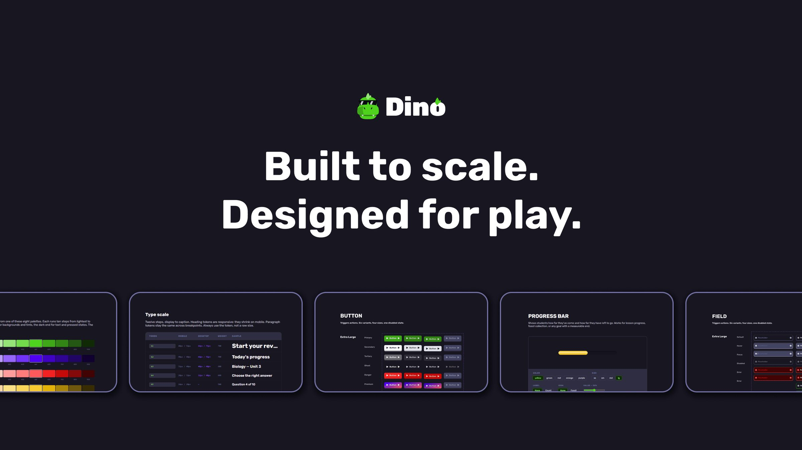

Dino Design System
Building the foundation of a new product from zero. Created in Figma and documented in a live site built with Astro

Dino was a new product line within Ucademy: a gamified, mobile-first learning app for students preparing for competitive exams. When the team decided to build it, nothing existed yet. No visual language, no components, no shared rules. I designed the system that gave Dino its identity and the structure to scale with AI.
What problem does it solve?
The reason to build a structured system was consistency today and scalability tomorrow. Dino is designed to grow with AI-generated content and dynamic interfaces. Every design decision needed to be explicit, because implicit rules don’t survive automation.
The process
1. Defining the foundations
I established what Dino should feel and not feel like: game-interface energy without sacrificing clarity or accessibility. Dark by default. Token-disciplined. Built to evolve.
Four core principles shaped every decision: craft, feedback-forward, token discipline, and dark-by-default with personality.
2. Building the token architecture
The system follows a three-layer hierarchy: Primitives (raw values), Semantic (meaning), and Component (context-specific overrides). All values are defined as Figma Variables and exported directly to CSS. One change at the primitive level propagates everywhere.
3. Designing the components
Each component was built with its full range of states and variants before touching documentation. Every decision follows strict token discipline. No hardcoded values anywhere in the system.
4. Building the documentation site
I built a documentation site from scratch using Astro and vanilla CSS, deployed on Vercel. It pulls directly from the same token source as the product, so the documentation is never out of sync with the design. Each component page includes a live interactive playground, variant documentation, usage guidelines, and Do’s and Don’ts.
The result
A complete design system built by one designer: token architecture, Figma component library, and a live documentation site. It reduced handoff friction, gave engineering a reference they could actually use, and was built with the right structure to scale alongside AI-powered features.